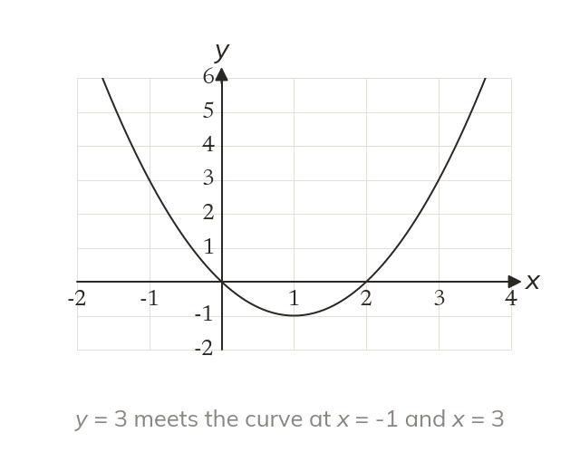
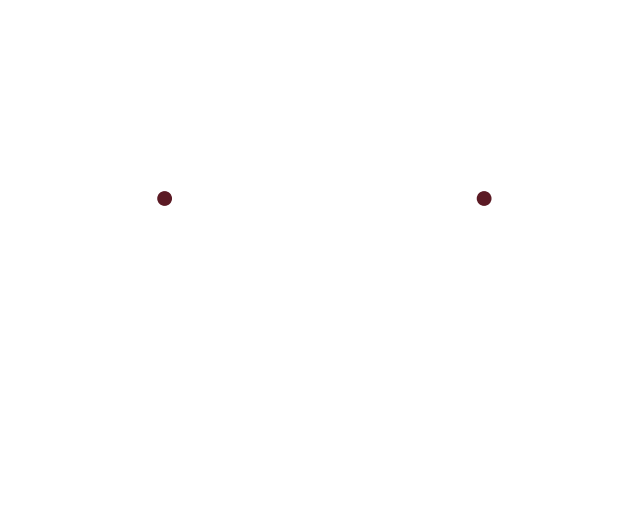

A horizontal line finds them
To solve x² - 2x = 3, draw the line y = 3. Each crossing with y = x² - 2x gives a solution.
The solutions of x² - 2x = 3 are where the curve y = x² - 2x meets the line y = 3. Each crossing gives one solution.